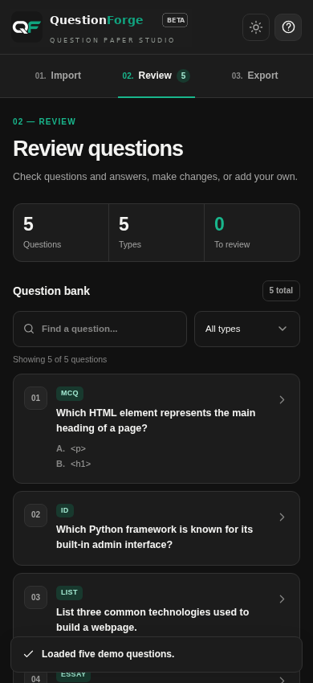

QUESTIONFORGE FOR TEACHERS
Good questions deserve a well-made paper.
Bring questions from ChatGPT into one place, check the answers, and turn them into a clean Word or PDF exam. Start with a lesson plan, BOW, or TOS when you need to follow a specific curriculum.
Free Chrome extension Developer preview No QuestionForge account


From a lesson to a polished assessment.
Less reformatting. More time checking whether the questions teach and assess what matters.
Work from your teaching materials
Import supported lesson plans, BOWs, TOS documents, or curriculum guides. Review extracted content and use it to build a coverage-planning prompt.
Keep every question organized
Import generated questions, check totals and answers, correct question types, and adjust the paper before exporting.
Make the document yours
Export editable Word files or save PDFs with school branding, margins, custom headers, answer keys, and optional two-column layouts.
Bring your lesson plan. Keep control.
QuestionForge doesn't decide what your class should learn. It helps you prepare source-based prompts, then lets you verify the coverage plan and final questions.
- Structured extraction from DOCX, XLSX, TXT, CSV, and supported PDFs
- Verify or correct content before using it
- Generate coverage and exam prompts for ChatGPT
- No built-in AI API or automatic document uploads


Format with intention, not guesswork.
A reliable assessment is more than nicely laid-out text. Use the Review screen to confirm the right question count, types, answers, and wording.
- Multiple choice, identification, enumeration, essay, and true/false
- Editable question bank and answer-key options
- School and subject details, logo, page margins, and columns
- Microsoft Word and Chrome Save as PDF workflows

Four steps. One clear process.
Import & verify
Choose teaching material or paste text. Compare the extraction with the original before approving it.
Plan the coverage
Copy a structured prompt into ChatGPT. Review the proposed assessment allocation.
Generate & check
Ask ChatGPT for questions, import structured JSON, fix parsing errors, and review answers.
Export
Choose formatting, preview the paper, and download Word or print a PDF.
Local-first, with clear choices.
Files are processed in your browser. QuestionForge doesn't automatically send them to an AI provider. Copying and pasting content into another service is your choice and is governed by that service's privacy rules.
Your next assessment, made clearer.
QuestionForge is currently available as a locally installable Chrome extension. Install locally from the production ZIP and follow the guide.